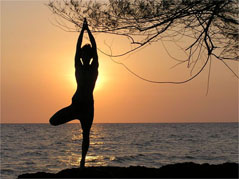

|
Inicia sus actividades en Lima a inicios del 2011 tras la experiencia anterior de su fundador, José Antonio Alfageme en la Republica Argentina, formando y dirigiendo el centro AnandaYogashala (Casa de Yoga Felicidad, sería su traducción) que durante más de 3 años desarrolló distintas actividades relacionadas al Yoga, en la provincia de Entre Ríos. Vital Yoga comparte la constatación de que, a pesar de los notables desarrollos que han existido en las condiciones de vida - sustentados en el crecimiento extraordinario de la tecnología y la disponibilidad de bienes y servicios de todo tipo -, nuestras vidas coexisten con fenómenos negativos como el estrés, la conflictividad, el sedentarismo, el empobrecimiento de las relaciones humanas y las desconexión de cada quien consigo mismo. |
 |
|
Estos fenómenos están a la base de múltiples problemas físicos y emocionales y del hecho de que muchísima gente, aunque busca casi permanentemente la felicidad, o no la encuentra o la puede disfrutar sólo en períodos breves. Posteriormente, en el 2008 fundó en Argentina, en la provincia de Entre Ríos, el centro Ananda Yoga Shala, donde enseñó yoga y organizó eventos y otras actividades en relación a dicha disciplina. A finales del 2010, ha regresado al Perú y, buscando difundir el yoga, ha dado forma a VITAL YOGA, como un canal de irradiación de esta técnica en la ciudad de Lima. |
|
Síguenos en : 
Vital Yoga